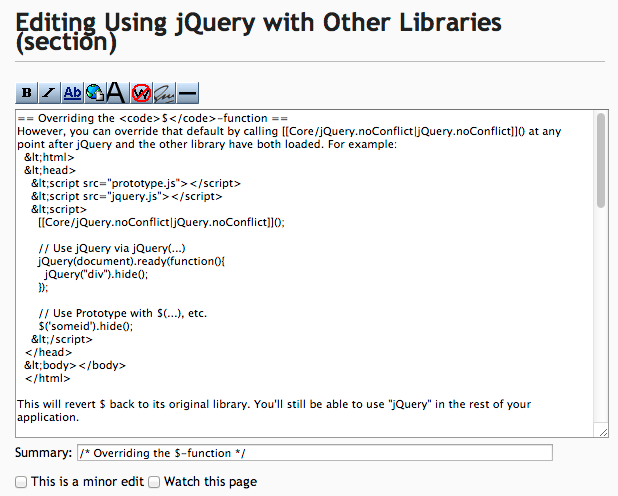

Contributing to jQuery
Helping us help you.
Created by Ryan Neufled / @ryanneufeld
Who am I?

Ryan Neufeld
Technical Lead for MetroLyrics.com
Property of CBS Interactive
jQuery Infrastructure Team
API Docs
They're important. Right?
No one wants to use a library that has bad documentation.
“API Documentation should be accurate and up-to-date”
— Every Developer I Know
Once upon a time
docs.jquery.com
- Let's crowdsource the documentation! Make it a wiki!
- Everybody can help!
- Caveat: Anybody can spam!
- Solution: Turn off user registration
- Result: Nobody can help
Well, not nobody
- Anyone who had an account still could use it
- Admins could create accounts for new people…
- …if new people could get in touch with admins…
- …and not be spammers…
Unfortunately, this sucks for everyone:
There has to be a better way
- API documentation should be structured
- And it shouldn't be in a wiki
"Hey, lets convert it all to XML and put it in Wordpress"
Traditional CMSes weren't any better than a wiki
- Requires special permission to access
- Editing experience is subpar
- Changes aren't tracked in version control
Not to mention
- Volatile content lives in the database, needs to be backed up
- No issue tracking
- Wholesale duplication of templates/CSS across sites
So, that sucked.
Now what?
What works for code?
- Version control
- Issue tracking
- Develop locally
Anyone should be able to submit a fix or improvement, no matter how large or how small, to any jQuery web site, using their text editor of choice.
Works for code. Will it work for our sites too?
- Version control
- Issue tracking
- Develop locally
Version Control?
Yes!
We put it all on GitHub
That's right, all of it.
That's right, all of it.
How do we make all this work on GitHub?
Requirements
- Content in Markdown
- Managed in Git & GitHub
- Published via Wordpress
Wordpress?!
Didn't you say that CMSes were bad?
I did, I'll explain
Solved Problems
- Taxonomies
- Searching
- User Managment
- Theme Inheritance
But what about the WYSIWYG?
Pretty sure you said this sucked.
There's a better way!
Code Representing Content
var client = wordpress.createClient({ ... });
client.newPost({
title: "Intro to jQuery",
content: "<p>jQuery is ...</p>"
});
<script>{
"title": "Intro to jQuery"
}</script>
<p>jQuery is ...</p>
Valid HTML, invisible metadata, local preview
Multiple Posts
Now we can represent all the data for a single post, but we still need to manage the full site.
So we use an obvious convention of organizing the HTML files into directories and use the paths as the URLs for the site. This lets us easily track what is being added, edited, and removed.
But Ryan, how does this get into wordpress?
- Wordpress XML-RPC
- grunt-wordpress
- grunt-jquery-content
Will what works for code
work for our sites too?
- Version control ✓
- Issue tracking ✓
- Develop locally ?
Local Development
It's really easy!
Prerequisites
Currently if you want to develop for jQuery sites using jquery-wp-content you can follow the instructions in the README.md
README.md
This install guide assumes you already have certain prerequisites already configured within your environment.
- Apache
- MySQL
- PHP
Virtual host, /etc/hosts... What is.. I don't even
You mean I have to install Apache and do all that other stuff?!
I thought you said this was gonna be easy Ryan.
This isn't easy.
Would I Lie To You?
Possibly, but not about this
A new challenger appears
- Virtualbox
- Vagrant
- And ...
- …no and then!
Virtualbox
It's the best of the free (as in beer at least) virtual machine softwares that works on all OSes1
It's free to use vagrant with Virtualbox without a license for Vagrant
Vagrant
Vagrant is a ruby project that makes working with virtual machines nearly painless